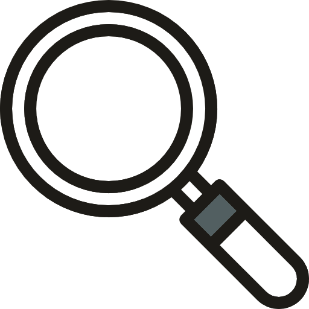

Alex Oroudjev
I am a
"Understanding why software fails is important, but the real challenge is
understanding
why software works. - Alexander Stepanov
About Me
Alex is the name and programming is the game. Let's get to know me quick and dirty. I'm a coding
connoisseur, a tech enthusiast, and a problem-solving wizard.
But don't let the binary digits fool you; I'm not all 1s and 0s. I'm a human behind the code, fueled
by coffee, curiosity, and a passion for innovation. I was born and raised in sunny Santa Barbara.
Here I met and made personal connections with friends and colleagues. Along my way I picked up
several hobbies including hiking, swimming, cars, music, coding, digital art,
and 3D printing.
I have completed my education background starting in my hometown gaining my
first exposure to various subjects in Santa Barbara City College. It was there that I got my first
taste of both computer science and bio/chemistry. I obtained my Bachelor in Biochemistry under the
Chemistry department at University of California Santa Barbara. Working throughout all of my years
of high school and college career I have acquired a number of skills. Also, I love bees.
Hobbies

Coding:
I have been interested in coding since a young age when I was able to get my hands on
technology. I began my programming experience in high school where I began to understand the
limitlessness of code. I now have many projects that show my variety of
skills.

Design/Images:
One of my interests lays within the art
department. While I do not consider myself an exemplary artist, I think my experience at thsi
point has left me with not only robust knowledge but also appreciation of the fine arts. I do
not showcase my work usually as it is generally used for my own personal interests but you can
find some of my media on my photos
album or my instagram. Oh and I love bees.
Design/Images:
One of my interests lays within the art
department. While I do not consider myself an exemplary artist, I think my experience at thsi
point has left me with not only robust knowledge but also appreciation of the fine arts. I do
not showcase my work usually as it is generally used for my own personal interests but you can
find some of my media on my photos
album or my instagram.
Projects
Here are some projects, complete or in progress. Most are in my Github,
have a look!

TrainEzPy is a simple script program that helps setup and train an object detection model. This
currently works for specifically Pascal Voc formated bounding boxes for exactly one classification.
While detecting multiple classes would be fairly easy to add in this program (perhaps in the
future), the point is to make it easy to quickly and effectively make a simple model. I made this
for my much larger project involving machine learning down below.
Education
As mentioned in my about section, I didn't go far for my education. After high school I attended the "number
one community college in the nation"; Santa Barbara City College. There I reinforced my general knowledge
and tested the waters of various majors. I went from Biology to Accounting/Economics to Chemistry and to
Computer Science. In the end, upon my transfer, I was forced to make a choice and went with biochemistry.
Biochemistry became my major at UCSB (University of California Santa Barbara).
The University of California Santa Barbara provided me with an absolutely wonderful education. While
attending the university I kept my computer science knowledge up with occasional reads and projects. This
stragety helped propel me to my next school for an advance degree.
Bioinformatics was my next conquest. I am set to complete my Masters of Science at Brandeis University in
March of 2024. This degree has refound my appreciation and curiosity of machine learning, data analysis, and
coding as whole. It has propelled me to my decision to push for a more software/programming oriented career.